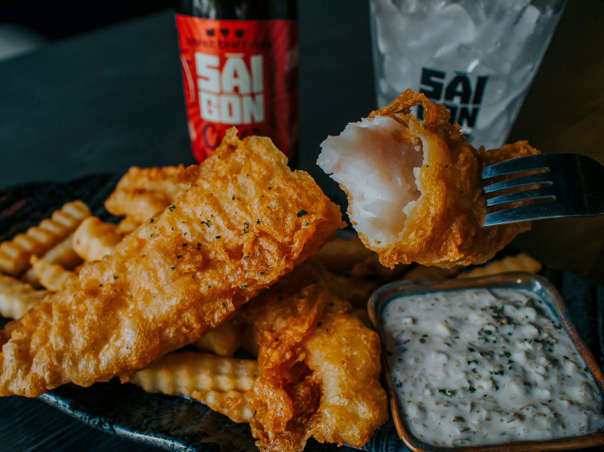

Fish and Chips

Fish and chips is a classic British dish consisting of battered fish and deep-fried chips. It's crispy, delicious, and perfect for a hearty meal.
Ingredients
- 2 large potatoes, peeled and cut into thick chips
- 2 fillets of white fish (e.g., cod or haddock)
- 1 cup all-purpose flour
- 1 teaspoon baking powder
- 1 cup cold sparkling water
- Salt and pepper to taste
- Oil for deep frying
Method
- Heat oil in a deep fryer or large pot to 180°C (350°F).
- Blanch the chips in the hot oil for 3-4 minutes, then remove and set aside.
- In a bowl, mix the flour, baking powder, and a pinch of salt. Gradually whisk in the sparkling water to create a smooth batter.
- Season the fish fillets with salt and pepper, then dip them into the batter, ensuring they are fully coated.
- Carefully place the battered fish into the hot oil and fry until golden brown and crispy, about 5-7 minutes. Remove and drain on paper towels.
- Return the chips to the hot oil and fry until golden and crispy, about 2-3 minutes. Remove and drain on paper towels.
- Serve the fish and chips hot with your favorite condiments, such as tartar sauce or malt vinegar.